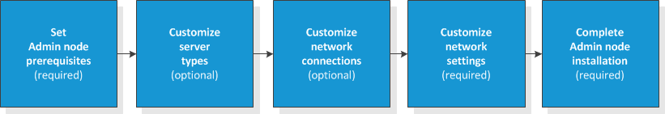
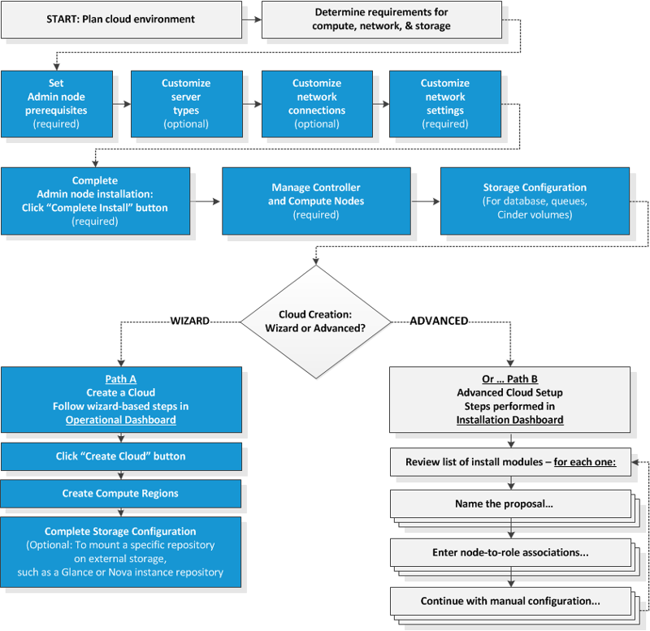
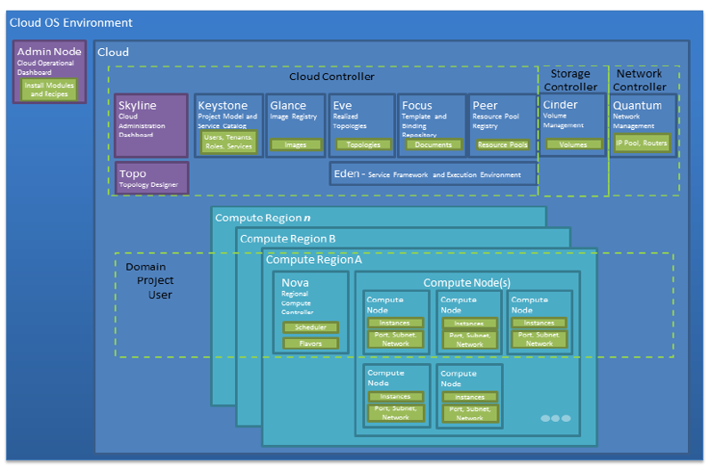

Installation Overview
Welcome! This topic presents an overview of the installation steps.
An HP Cloud OS infrastructure requires planning and preparation by IT Administrators to set up, configure, and install a specific network, storage, and hardware infrastructure.
These installation topics provide the means to plan, install, configure, and create an HP Cloud OS infrastructure.
The HP Cloud OS installation deploys the HP Cloud OS Operational Dashboard (used to set up, configure, and install an HP cloud infrastructure) and the HP Cloud OS Administration Dashboard (used to create and manage cloud resources).
- HP Cloud OS Environment
- Preview of the Installation Steps
- Components of the HP Cloud OS Environment
- Next Step
HP Cloud OS Environment
The HP Cloud OS environment consists of an installer, services and controllers that provide: Simplified service delivery with automated-live content distribution and easier installation and configuration processes. This allows manually intensive operational processes to be reduced from hundreds of steps over multiple packages to a simple, automated process.
Optimized cloud workload across cloud providers with model once and provision anywhere capability combined with repeatable, consistent workload placement across diverse cloud deployment models. This allows your customers to optimally align workloads with resources and improve resource utilization.
Flexible and open architecture powered by OpenStack, gives you an industry leading, vendor neutral, open source cloud architecture.
Preview of the Installation Steps
At a high level, here are the steps to setup and install the Admin node:

The steps shown above feature an automated process in the HP Cloud OS Operational Dashboard, where you can accept defaults or enter values that are specific to your requirements (such as your network settings). Using this automated approach, HP Cloud OS handles all of the installation details for you, installing the OpenStack services and the HP Cloud OS value-added services.
Taking a broader view, this next diagram illustrates those steps in a larger context. Notice how once you've installed and set up the Admin node, you have a choice between two paths: wizard-based (in the Operational Dashboard), or advanced steps (in the Installation Dashboard).

What this means: When you create a cloud using the process defined in Create a Cloud, a number of OpenStack and HP Cloud OS install modules are automatically configured and deployed for you. In most cases, the automated deployment of install modules will suffice. However, should you need to customize values in the install modules that are not exposed in the Create Cloud Attributes tab, this advanced section, along with Install Modules Reference, are provided to assist you in the process of customizing and deploying the individual install modules.
Components of the HP Cloud OS Environment
The following diagram illustrates the HP Cloud OS environment.

HP Cloud OS Administration Node
The HP Cloud OS Administration Node (Admin Node) hosts the Operational Dashboard that deploys private and hybrid-only cloud infrastructure environments by network booting the managed baremetal servers, which are the Controller and Compute nodes. Using Chef Server and recipes, the services are installed on the managed baremetal servers. Note: In this and subsequent HP Cloud OS topics, we refer to these managed baremetal servers more simply as "managed nodes."
Services
Cloud Infrastructure consists of individual services installed and integrated together across one or more nodes to form a cloud environment. These are composite services that are integrated together into a single cloud solution. Services are exposed or published as RESTful APIs. The list of services that can be deployed for HP Cloud OS are:
Keystone (Identity Management Service)— An OpenStack service to provide identity (domain, project and users) management, access token, and service catalog functionality.
Glance (Image Repository Service)— An OpenStack service to provide for discovering, registering, and retrieving virtual machine images.
Nova (Compute Controller and Compute Node Service)— An OpenStack service to provide a compute fabric controller.
Cinder (Volume Connectivity Service)— An OpenStack service to provide volume management.
Quantum (Neutron) (Network Connectivity Service)— An OpenStack service to create and provision virtual networks.
Swift (OpenStack Object Store) — An OpenStack service to store and retrieve lots of data in virtual containers.
Graffiti (Resource Pool Registry and Capability Tagging Service) — An HP Cloud OS service to support diverse functions: discovering, registering, and retrieving resource pool definitions for compute, network, and volume resources; a dictionary of the cloud's capabilities; a searchable directory to find cloud resources based on their capabilities; and dynamic binding, describing the requirements instead of static binding.
Eve (Topology Provisioning Service)— An HP Cloud OS service to provide for provisioning lifecycle of a TOSCA-based infrastructure topology design of the compute, network, and volume resources in a defined resource pool. Also provides security and management.
Focus (Topology Document Repository Service)— An HP Cloud OS service to provide for discovering, registering, versioning, and retrieving of document types necessary to describe TOSCA-based infrastructure topologies.
Controller and Compute Nodes
While each service can be individually deployed, HP Cloud OS groups these services into distinct groups for ease of architectural description.
Cloud Controller: This contains those services that are considered single services for a cloud environment, such as Keystone, Glance, Graffiti, Eve, and Focus, and define the boundaries of the cloud environment from an identity standpoint.
Storage Controller: This contains Cinder services that provide block storage and volume connectivity to launched instances. It is a single service in a cloud and can co-exist with Cloud Controller services.
Network Controller: This contains Neutron's server, l3 agent and DHCP services. It is a single service in a cloud and can co-exist with cloud controller services.
Compute Region Controller: A Resource Region is known as a Compute Region. This is a pool of compute resources that can be consumed through a service API by consumers of the cloud, such as Nova. This is responsible for scheduling a launch of instances across compute nodes. The scheduling is based on varied flavors of instances and available resources on the compute nodes. In a single compute region deployment model, this can coexist with cloud controller services.
An HP cloud can consist of more than one region. For example, you can separate the regions based on the workload such as between a development/test team and a production deployment. A development/test team region's compute requirements can use commodity and less expensive hardware. Whereas a production deployment region's compute requirements need a set of compute resources that are backed up with heavy compute and fault-tolerant resources.
Note: HP recommends that you define and use multiple compute regions. In this scenario, the Compute Region Controller is its own node.
Compute Node: A compute node hosts the Cloud virtual machine instances using any supported hypervisor with OpenStack. In the current release, Cloud OS supports KVM as the hypervisor. This node hosts OpenStack services called Nova-compute and Neutron l2 agent. Multiple Compute Region Nodes can be created to expand cloud capacity.
Next Step
Proceed to the next topic, Before You Install.